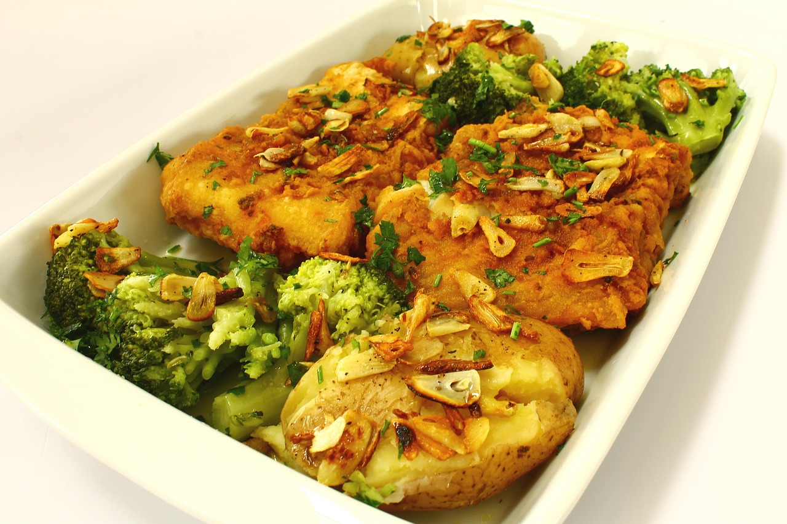

Baked cod, potatoes & broccoli
Per portion
462kcal per portion
Dinner budget 879Per 100 g 99
P · Protein
41 g
of 100 g
F · Fat
12 g
of 70 g
C · Carbs
49 g
of 255 g
Bars show this portion against your daily goal.
Ingredients
1 portion · ✓ USDA
Servings
portion
Method
No steps yet
Add how to cook this dish, one action per step, so you can make it again.
Changes are saved as your version of this recipe. Values per 100 g from USDA FoodData Central; ml uses each food's density.